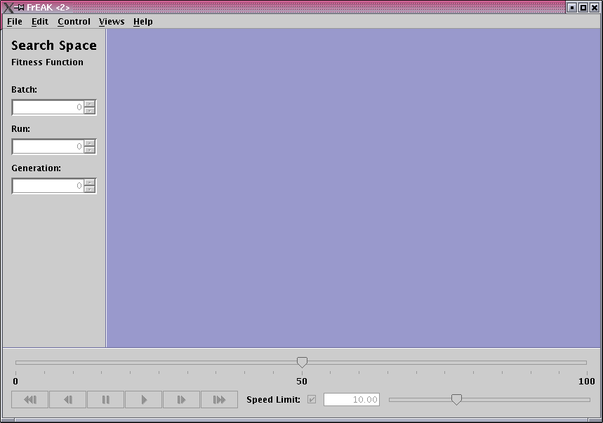
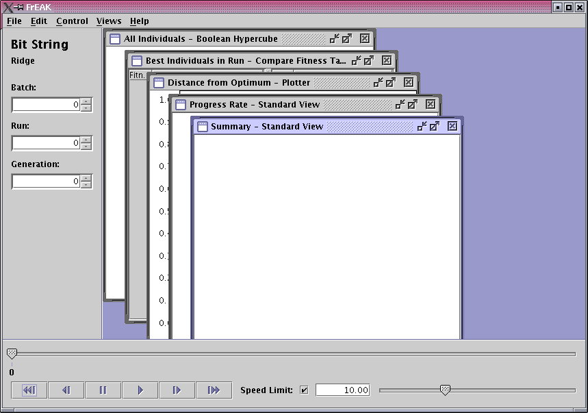
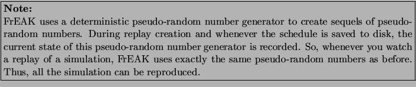
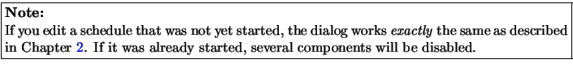

Subsections
3. Controlling Runs of Evolutionary Algorithms
When starting FrEAK, you see a window as shown in Figure 3.1.
Figure 3.1:
The window after starting FrEAK.
|
 |
You see an information panel on the left side, a control panel at the bottom, and a desktop with the selected views on the right side. The information panel to the left displays the current phenotype search space and the current fitness function. Below, you see the current time index consisting of the current batch, the current run and the current generation.
Note that almost all menu items are disabled at the beginning. The first step to take is to create a new schedule by choosing New from the File menu. The creation of new schedules is described in Chapter 2: chapter2. Alternatively, you may open an existing schedule by choosing Open from the File menu.
The Help menu provides further information. You can open this document there or take a look at the About dialog.
Figure 3.2 shows the FrEAK window after creating or loading a schedule.
Figure 3.2:
The FrEAK window after creating a schedule.
|
 |
In the control panel, you find several buttons used to navigate through the already simulated batches, runs, and generations. These buttons will be explained in the following section. The big slider at the top of the control panel indicates the current generation measured according to all generations that have already been simulated in this run.
When running the simulation you can choose if you want to set a speed limit for the simulation. The speed limit represents the maximal number of generations per seconds and can be enabled and disabled using the corresponding check box in the control panel. The limit itself can be adjusted by using either the text field or the slider to the right.
With a click on the Start button you start the first run.
The simulation can always paused by using the Suspend button. Some operations are only available while the run is suspended, such as editing the current schedule, modifying the speed limit, current run and current generation, or configuring views.
Press the Start button again and the simulation is continued.
3.2 Watching Replays
FrEAK provides a replay mode to watch past batches, runs, and generations. To step back to an earlier time index, use the navigation buttons in the control panel or enter the desired time index in the information panel on the left. FrEAK automatically switches to replay mode and looks for the specified time index. This may eventually take some time because some runs and generations have to be simulated in the background to reach the desired time index.
The Control menu as well as the navigation bar inside the control panel contain the following navigation commands.
- Go to Start go back to the start of the simulation.
- Step Back go back to the last start of a run.
- Suspend pause the current Schedule.
- Start start or continue the current Schedule.
- Skip Run jump to the start of the next run.
- Go to End jump forward to the last known generation.
You can also use the generation slider to quickly jump between generations.
When replay is finished and the last simulated generation is reached, FrEAK automatically turns back to running mode and continues simulating new generations.

3.3 Editing the Current Schedule
You can modify the setup of the current schedule to a certain degree depending on the progress of it. This is done via the same dialog that was used to create a new schedule. To open this dialog, select Edit Schedule... from the Control menu. The handling of this dialog is explained in detail in Chapter 2: chapter2 with the difference that several options are not available and you start with CreateBatches if your schedule was already started.

Please refer to Chapter 2: chapter2 on how to work with the schedule editor.
3.4 Menu Items
The menu provides several functions which are described in detail here.
Note that there are shortcuts for the most important functions.
This menu is used for schedule management and to exit FrEAK.
- New
- Create a new schedule with the Schedule Editor.
For details see Chapter 2: chapter2.
- Open
- Open an existing schedule.
- Save
- Save the current schedule.
- Save as
- Save the current schedule requesting a file name.
- Exit
- Exit FrEAK.
Contains several operations from the control panel.
- Edit
- Edit the current schedule. For details see Section 3.3: EditingSchedule.
- Configure Selected View
- If the currently selected view is configurable and the current run is suspended,
you can configure the view in the configuration dialog by choosing
this menu item. For help on the configuration dialog see
Section 2.6: configurationOfModules.
Contains several operations from the control panel. Most of them were already explained in Section modes.
- Start
- start or continue the current Schedule.
- Suspend
- pause the current Schedule.
- Step Back
- go back to the last start of a run.
- Skip Run
- jump to the start of the next run.
- Go to Start
- go back to the start of the simulation.
- Go to End
- jump forward to the last known generation.
- Go to ...
- jump to a specified generation.
This menu is used to manage the current views. If a schedule containing views is active, all views are listed in the upper part of the menu and can be activated by choosing the corresponding menu item.
The lower part of the menu contains general window management functions for the views.
- Tile
- Tile the views on the desktop. Minimized and closed views are not considered.
- Cascade
- Reorder the views on the desktop in form of a cascade. Minimized and closed views are not considered.
- Minimize All
- Minimize all visible views.
- Restore All
- Restore all closed and minimized views.
- Close All
- Close all opened views. You can restore all view windows with the
menu item Restore All or simply click on the menu item
corresponding to the view you want to restore.
The Help menu offers you a global help.
- Help
- opens a HTML version of this document.
- About
- opens the about dialog where you can learn more about the current version and the developer team of FrEAK.